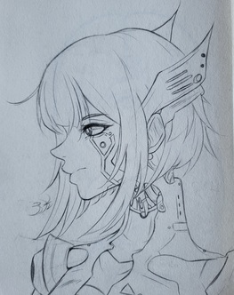

Artwork:

BIO:
I am a college student majoring in Graphic Design. When I’m not currently working on assignments or at work I enjoy spending time with my friends. Whether it be traveling somewhere, going to the gym, or playing games online I spend most of my free time hanging out with the people I enjoy. Music is also something that drives me to create artwork and illustrations. Something that inspires me about web design is the amount of freedom and variety every website can potentially have, I particularly enjoy very graphic and Pop art that jump out at the viewer. I study design so that I can learn a multitude of different styles and techniques and what makes each of them special.
Artwork:
